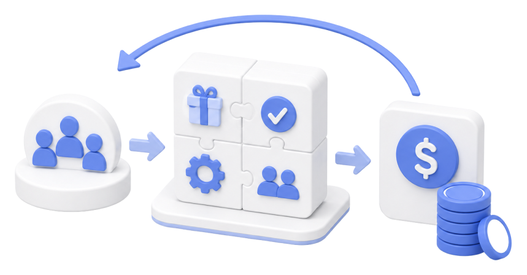
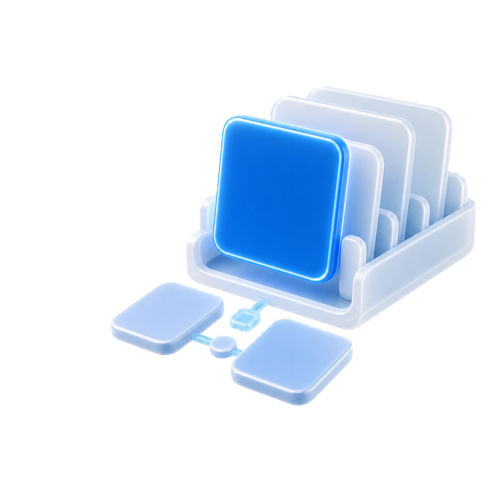
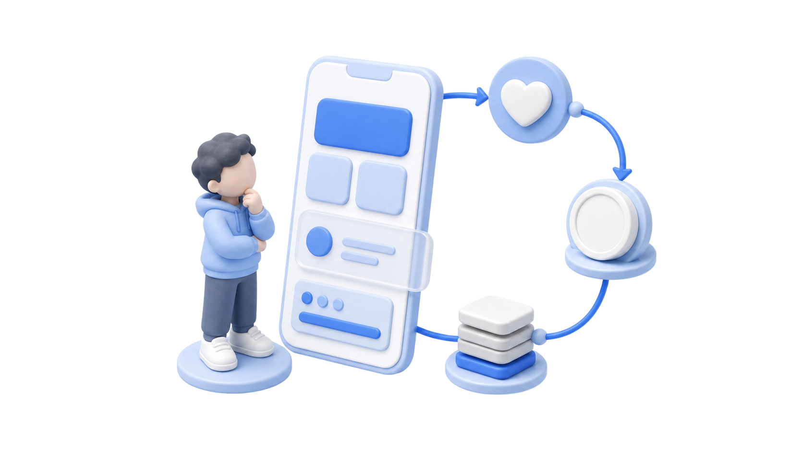
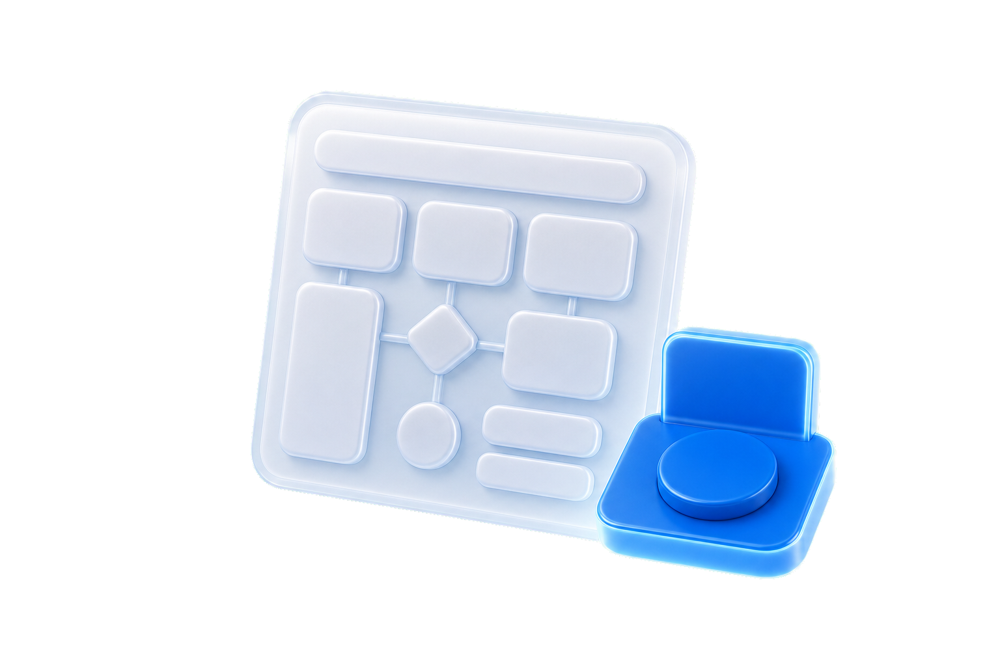
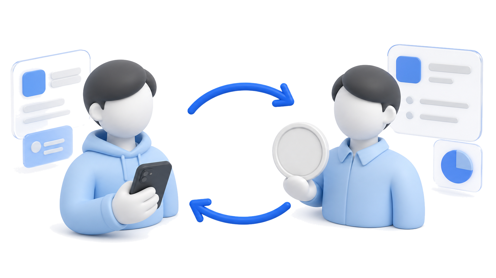
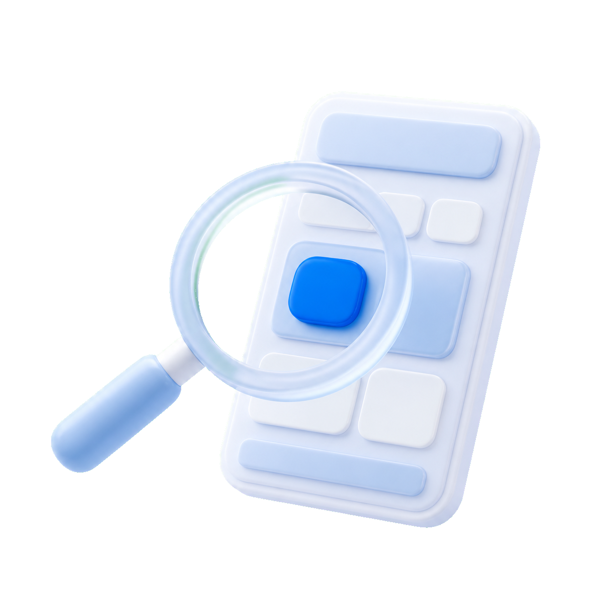
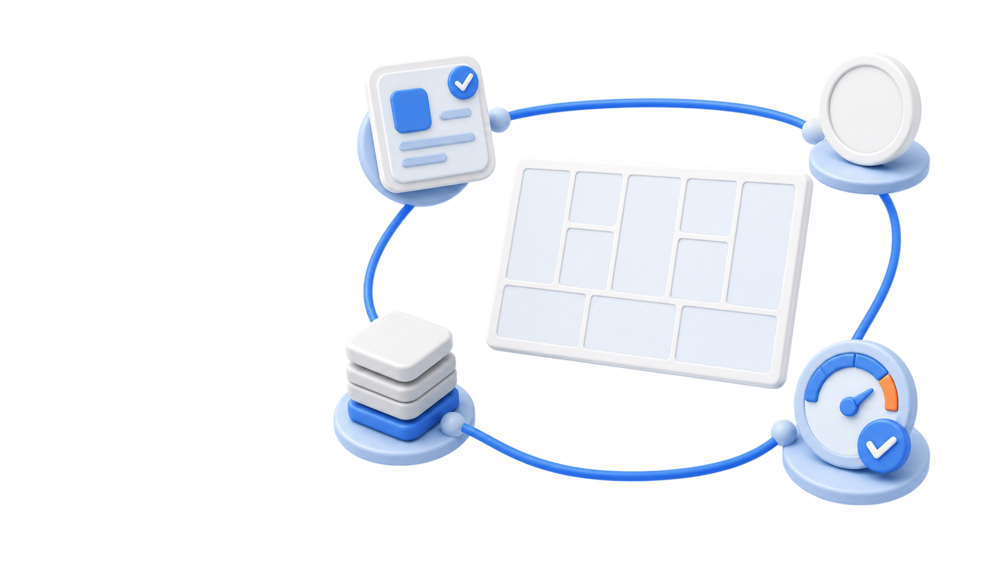
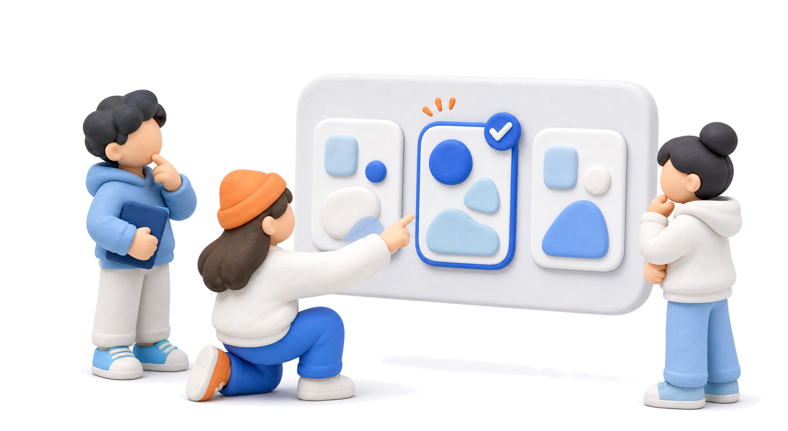
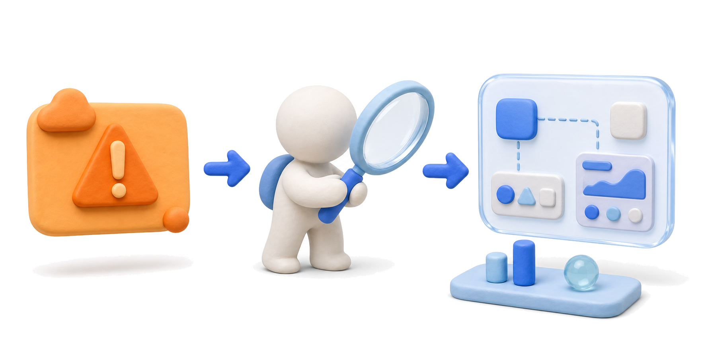
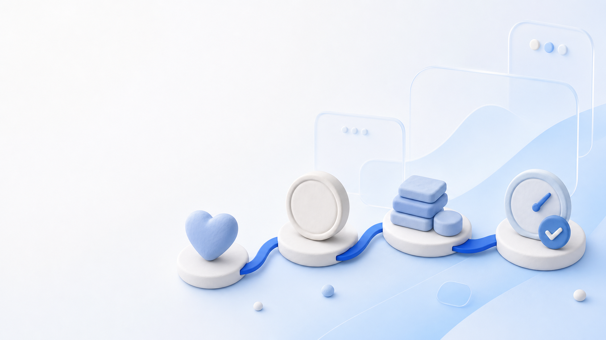

Official LIKELION at SKU
기획 & 디자인

Official LIKELION at SKU
11주차 기획시간!
BM: 비즈니스 모델과 수익 모델
우리가 만든 서비스, 이거 어떻게 돈 벌어요?
어떤 방식으로 수익을 만들며
어떻게 지속될 수 있는지 정리합니다.

Official LIKELION at SKU
오늘 배우게 될 것
사용자에게 주는 가치뿐 아니라
돈이 들어오고 나가는 구조까지
설명할 수 있어야 합니다
BM이 필요한 이유
서비스가 왜 쓰이고 어떻게 지속되는지 이해하기
BM과 수익 모델 구분
사업 전체 구조와 돈이 들어오는 방식을 구분하기
수익 모델 이해와 선택
수익 모델을 살펴보고 서비스에 맞는 방식 고르기
Lean Canvas로 정리
고객, 가치, 수익원, 비용 구조를 한 장으로 정리하기
Official LIKELION at SKU
PART 2 / 4
BM과 수익 모델 구분
사업 전체 구조와 돈이 들어오는 방식을 구분하기
Official LIKELION at SKU
PART 1 · BM이 필요한 이유
“그래서 이거… 어떻게 돈 벌어요?”
발표 때 누군가 이렇게 묻습니다.
Official LIKELION at SKU
PART 3 · 수익 모델 이해와 선택
꼭 기억할 질문 하나
돈 내는 사람 = 쓰는 사람인가?

Official LIKELION at SKU
PART 3 · 수익 모델 이해와 선택
수익 모델은 발명이 아니라
선택과 조합
돈 버는 방식은 사실 거의 정해져 있습니다. 이미 있는 구조 중 우리 서비스에 맞는 걸 고르고 섞는 일에 가깝습니다.

Official LIKELION at SKU
PART 1 · BM이 필요한 이유
1주차 역기획, 한 발 더 들어갑니다
1주차에는 “기획자가 수익을 발생시키려 설계한 장치는 어디 있나?”를 찾아봤죠.
오늘은 그 장치가 무슨 종류인지, 왜 골랐는지, 우리 서비스엔 무엇이 맞는지 봅니다.


Official LIKELION at SKU
PART 1 · BM이 필요한 이유
좋은 기획은 화면에서 끝나지 않습니다
화면은 경험의 입구, BM은 경험이 굴러가는 작동 구조입니다.

Official LIKELION at SKU
PART 2 · BM과 수익 모델 구분
한쪽은 운영 설계도, 한쪽은 계산대
| 개념 | 핵심 질문 | 쉬운 비유 |
|---|---|---|
| 비즈니스 모델 | 이 사업은 어떻게 작동하고 지속되는가? | 가게 전체 운영 설계도 |
| 수익 모델 | 돈은 누구에게서 어떤 방식으로 들어오는가? | 계산대에서 돈 받는 방식 |
고객, 가치, 채널, 비용, 수익이 서로 맞물려 굴러가는 구조를 봅니다.
가격표, 과금 단위, 지불 주체처럼 돈이 들어오는 순간을 좁혀 봅니다.
“왜 계속 굴러가나?”는 BM, “누가 언제 내나?”는 수익 모델입니다.

Official LIKELION at SKU
PART 2 · BM과 수익 모델 구분
예시: 쿠팡
| 비즈니스 모델 | 상품을 직접 사들여 로켓배송으로 빠르게 전달하는 이커머스 플랫폼 |
|---|---|
| 수익 모델 | 상품 판매 마진 + 와우 멤버십 구독료 + 입점 판매자 수수료 + 광고비 |
Official LIKELION at SKU
PART 3 · 수익 모델 이해와 선택
15개 수익 모델 유형 (1/2)
구독형
월·연 단위로 계속 결제합니다.
반복해서 쓰는 서비스: SaaS, OTT
반복 매출 · 이탈률
프리미엄
기본은 무료, 고급 기능은 유료입니다.
먼저 써봐야 가치가 보이는 툴
무료→유료 전환율
기부·후원형
팬·사용자가 자발적으로 후원합니다.
창작자, 커뮤니티, 오픈소스
후원액 · 지속률
광고형
사용자는 무료, 광고주가 냅니다.
트래픽 큰 미디어, 검색, SNS
DAU/MAU · CTR
거래 수수료형
거래가 성사될 때마다 일부를 받습니다.
구매자·판매자 연결 플랫폼
GMV · 수수료율
제휴형
고객을 보내고 소개료를 받습니다.
리뷰, 추천, 비교 서비스
전환율 · 전환당 수익
직접판매형
제품·콘텐츠를 바로 판매합니다.
전자책, 강의, 굿즈
객단가 · 재구매율
인앱 구매형
앱 안에서 개별 구매합니다.
게임, AI 앱, 콘텐츠 앱
결제자 비율
Official LIKELION at SKU
PART 3 · 수익 모델 이해와 선택
15개 수익 모델 유형 (2/2)
라이선스형
기술·IP 사용권을 판매합니다.
계약 수 · 갱신률
화이트라벨
내 제품을 남의 브랜드로 공급.
파트너 수 · 유지율
종량제
사용량이 늘수록 더 냅니다.
사용량 · 단위 원가
성과보수형
결과가 나올 때만 청구합니다.
성과율 · 건당 수익
면도기-면도날
본체보다 소모품에서 수익.
소모품 재구매율
데이터 판매형
쌓인 데이터를 리포트·API로.
데이터 품질 · 반복 구매
렌탈·대여형
일정 기간 사용권을 팝니다.
가동률 · 회수 기간
Official LIKELION at SKU
PART 2 · BM과 수익 모델 구분
비즈니스 모델 ⊃ 수익 모델
이름이 비슷해서 헷갈리지만, 둘은 포함 관계입니다.
비즈니스 모델 고객·문제·가치·전달·비용·수익까지 — 사업 전체가 어떻게 작동하고 지속되는지 설명하는 그림
수익 모델 그중 “돈이 들어오는 방식” 한 조각 — 돈이 누구에게서 어떻게 들어오는지를 정하는 부분
Official LIKELION at SKU
PART 3 · 수익 모델 이해와 선택
쓰는 사람 ≠ 내는 사람
수익 모델은 “누가 쓰나”보다 “누가 돈을 내나”에서 갈립니다.

Official LIKELION at SKU
PART 3 · 수익 모델 이해와 선택
워밍업: 역기획으로 수익 포인트 읽기
모두가 아는 앱 1개를 떠올리고, 돈이 흐르는 지점을 같이 뜯어봅니다.
수익 포인트
이 앱에서 돈이 발생하는 지점은 어디인가?
모델 분류
그건 15개 중 무엇인가?
근거
고객 행동·비용 구조상 왜 그 모델이 맞을까?
지불 주체
돈 내는 사람이 쓰는 사람과 같은가?

Official LIKELION at SKU
PART 4 · Lean Canvas로 정리
BMC와 린캔버스, 뭐가 다를까?
비즈니스 모델 캔버스
Business Model Canvas · 2005, 오스터왈더
사업의 전체 구조를 9칸에 그립니다.
고객, 자원, 파트너, 수익까지 함께 봅니다.
이미 굴러가는 사업을 설명하기에 좋습니다.
린캔버스
Lean Canvas · 2010, 애시 모리아 — BMC의 스타트업판
BMC를 초기 아이디어 검증용으로 줄인 버전입니다.
문제, 솔루션, 지표, 경쟁우위에 집중합니다.
관점은 “이 아이디어, 진짜 될까”입니다.
Official LIKELION at SKU
PART 4 · Lean Canvas로 정리
PART 4는 BM을 한 장으로 정리하는 시간
앞에서 정리한 문제·고객·가치에 수익원, 비용 구조, 핵심 지표를 붙입니다.

Official LIKELION at SKU
PART 4 · Lean Canvas로 정리
선정 3분팀 프로젝트 선정

Official LIKELION at SKU
PART 4 · Lean Canvas로 정리 · 번호(①→⑨) 순서로 채우기
린캔버스 9칸, 채우는 순서
문제
고객이 겪는 가장 큰 문제 1~3개 + 기존 대안.
솔루션
각 문제를 풀 핵심 기능(MVP).
핵심 지표
잘되는지 판단할 숫자 1~3개.
고유 가치 제안
“왜 굳이 우리 서비스를?”를 한 문장으로.
따라 하기 어려운 강점
우리만 가진 강점.
채널
고객이 알고·찾고·쓰게 되는 경로.
고객군
핵심 고객 + 초기 사용자.
비용 구조
고정비 + 변동비(서버·AI 등).
오늘의 핵심수익원
어떻게 버는지(15개 중 1~2개) + 내는 사람.
오늘의 핵심Official LIKELION at SKU
PART 4 · Lean Canvas로 정리
이 수익이 성립하려면 무엇이 참이어야 하나?
9칸을 다 채웠다면, 그중 가장 위험한 가정 하나부터 확인합니다.

Official LIKELION at SKU
PART 4 · 핵심 지표로 ⑧칸 채우기
수익 모델을 검증하는 핵심 지표
Official LIKELION at SKU
PART 4 · 핵심 지표로 ⑧칸 채우기
전부 보지 말고, 딱 1개만
너희 ⑥수익원에 맞는 가장 중요한 지표 1개를 골라 ⑧칸에 적으세요.
기존 고객이 빠르게 이탈하면 매출이 쌓이지 않습니다.
사용자가 많을수록 노출·광고 단가가 오릅니다.
거래액이 커질수록 수수료 매출도 커집니다.
무료→유료 전환이 매출을 결정합니다.
※ 참고 — 위 카드는 예시입니다. 우리 팀에 맞는 핵심 지표 1개를 고르고 이유를 한 문장으로.
Official LIKELION at SKU
가격 조사법
가격을 물어보는 두 가지 방법
고객이 받아들이는 가격 범위를 봅니다
묻는 것너무 싸다·싸다·비싸다·너무 비싸다를 각각 묻습니다.
알 수 있는 것부담 없이 받아들이는 가격대의 범위.
쓸 때대략적 범위를 잡을 때 좋습니다.
가격별 구매 의향을 확인합니다
묻는 것가격별로 살 의향이 있는지.
알 수 있는 것가격이 오를수록 구매 의향이 얼마나 줄어드는지.
쓸 때후보 가격 중 설득력 있는 가격을 고를 때.

Official LIKELION at SKU
세션 요약
오늘 한 장으로 남기기
좋은 BM은 돈 버는 방법 하나가 아니라 가치·수익·비용이 맞물린 구조입니다.
가치 제안
누구의 문제를 얼마나 낫게 만드는가?
수익 모델
누가, 왜, 어떤 방식으로 돈을 내는가?
비용 구조
사용자가 늘수록 커지는 비용은?
핵심 지표
작동하는지 어떤 숫자로 볼 것인가?